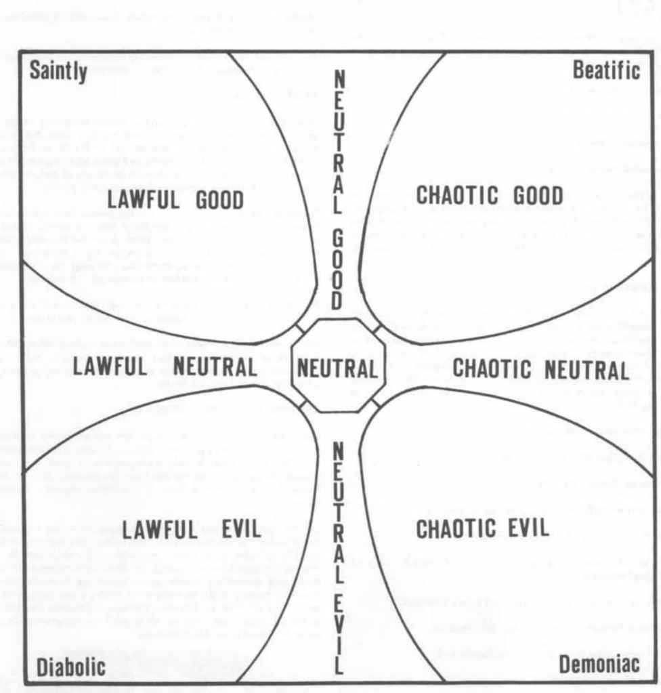
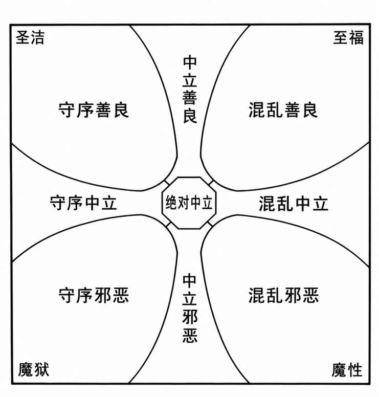

附录 III：角色阵营图 · Appendix III: Character Alignment Graph


本图以善恶为纵向、中立善恶为中央轴，呈现守序、中立与混乱阵营的关系。
原图将善良一端标为“圣洁（Saintly）”与“至福（Beatific）”，邪恶一端标为“魔狱（Diabolic）”与“魔性（Demoniac）”。这些称谓表示阵营倾向的极端，不构成额外阵营。
上一节：吟游诗人的能力与限制
下一节：附录 IV：已知位面 · Appendix IV: The Known Planes of Existence